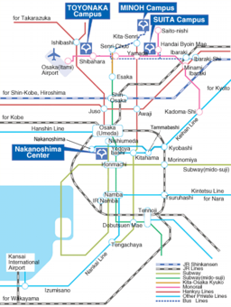

From Senri-chuo Station (Metro & Monorail) to SUITA Campus
From Senri-chuo Station of Metro and Monorail to SUITA Campus, please ride on Hankyu Bus bound for “Handai Honbu-mae” Bus Stop (Line #100, 106) or "Ibaraki Mihogaoka” Station (Line #103, 105) and get off the bus at Handai Honbu-mae Bus Stop. Our building is located at about 200m south from the Handai Honbu-mae Bus Stop. It is located at the south of our university administration office / at the west of our university’s convention center in SUITA Campus. It takes about 20 minutes from Senri-chuo Station. For details, please check the homepage of Hankyu Bus since the time table might be changed. Please click here for the time table of Hankyu Bus (pdf file). (A bus is usually departed every 10 minutes)

Access to Higashino Lab. in SUITA Campus from Shin-Osaka Station and Itami/Kansai Airports (A wider map is shown by clicking this map)
Osaka Monorail (10 min. walk from Handai Byoin-mae Station)
Please change Osaka Monorail at Banpaku Koen-mae Station and get off at Handai Byoin-mae Station. It takes about 10 minutes walk from Handai Byoin-mae station to Higashino Lab.
From JR Ibaraki Station
From JR Ibaraki Station, please ride on Kintetsu Bus bound for “Handai Honbu-mae” Bus Stop (Line #24) from Bus Terminal #6. It takes about 20 minites from JR Ibaraki Station. Please click here for checking the time table of the bus from JR Ibaraki Station (PDF file).It takes about 20 minutes. For details, please check the homepage of Kintetsu Bus since the time table might be changed.
From Hankyu Ibaraki-shi Station
From Hankyu Ibaraki-shi Station, please ride on Kintetsu Bus bound for “Handai Honbu-mae” Bus Stop (Line #24) from Bus Terminal #4. It takes about 30 minites from Hankyu Ibaraki-shi Station. Please click here for checking the the table of the bus from Hankyu Ibaraki-shi Station (PDF file).For details, please check the homepage of Kintetsu Bus since the time table might be changed.
From Sin-Osaka Station (Shinkansen Super Express Train)
From Shin-Osaka Station, please ride on Metro bound for “Senri-chuo” Station (Midosuji Line). From Senri-chuo Station, please ride on Hankyu Bus bound for "Handai Honbu-mae” Bus Stop shown in the above. It takes about 45 minites from Shin-Osaka Station.
From Kansai Airport (From KIX Airport)
From Kansai Airport (KIX Airport), please ride on the limousine bus bound for “Osaka International Airport” (Itami Airport). From Osaka International Airport (Itami Airport), please ride on the monorail shown in the above. It takes about 120 minites from Kansai Airport.
Address:
Department of Information Networking
Graduate School of Information Science and Technology
Osaka University
Yamadaoka 1-5, Suita-shi, Osaka 565-0871, Japan
Location of Higashino Laboratory:
5th Floor of Building A of Graduate School of Information Science and Technology

{kind=link}
{kind=link}